注意： アプリを入れなくてもすべての手順を手動で行うことができます。
アプリのAPKファイルをダウンロード ISRGRootX1Installer--1-1.0-20200917_182601.apk
アプリを開始するとこんな画面が見えます。
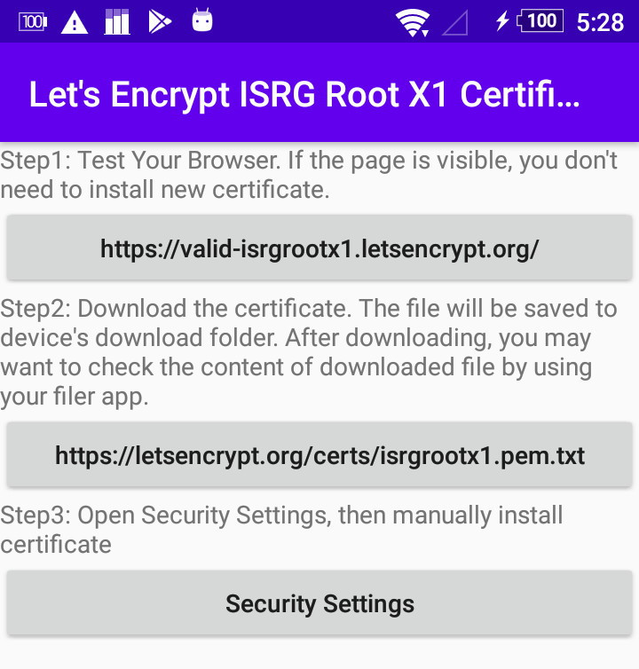手順1のボタンを押します。

もし試験サイトを正しく表示できたら、手順2以降の操作は必要ありません。
もしエラーが表示されたなら、証明書のダウンロードとインストールを行いましょう。
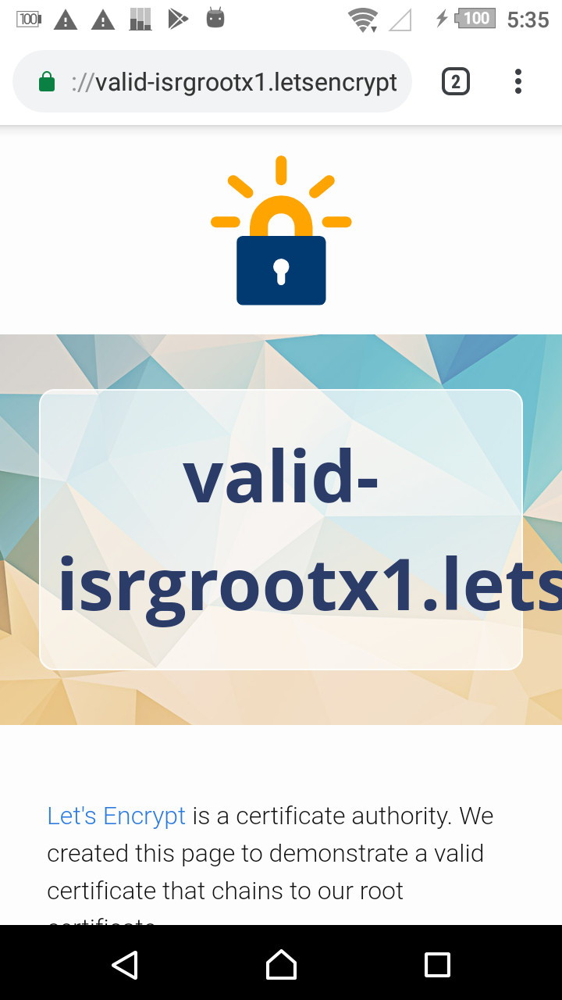
手順2のボタンを押します。
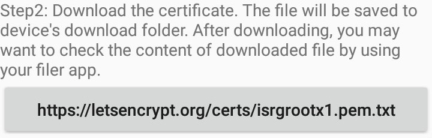証明書をダウンロードするのに、ストレージ権限をアプリに許可してください。
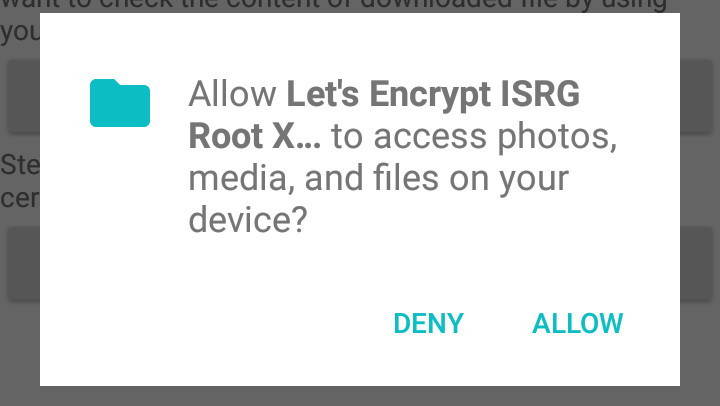ダウンロードが完了すると、通知が表示されます。
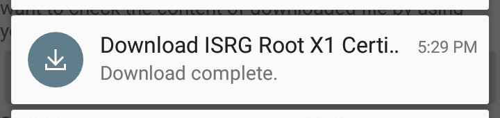(省略可能) このアプリを信用しないでください。ファイラーなとでPEMファイルの内容を確認して、オリジナルの配布サイトのものと同一か確認してください。
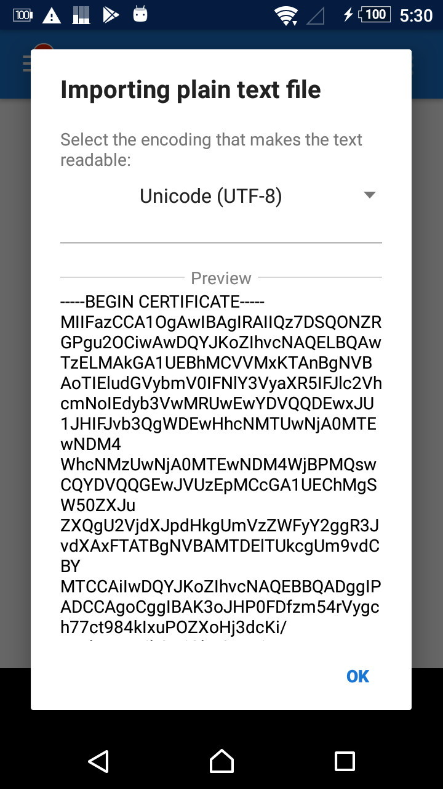手順3のボタンを押します。
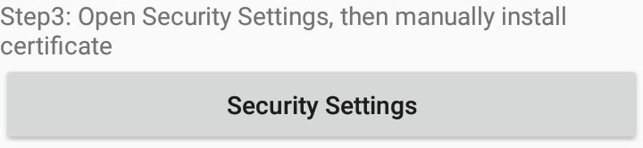端末のセキュリティ設定が開きます。"認証情報ストレージ / 機器メモリーかSDカードからインストール" を選択してください。
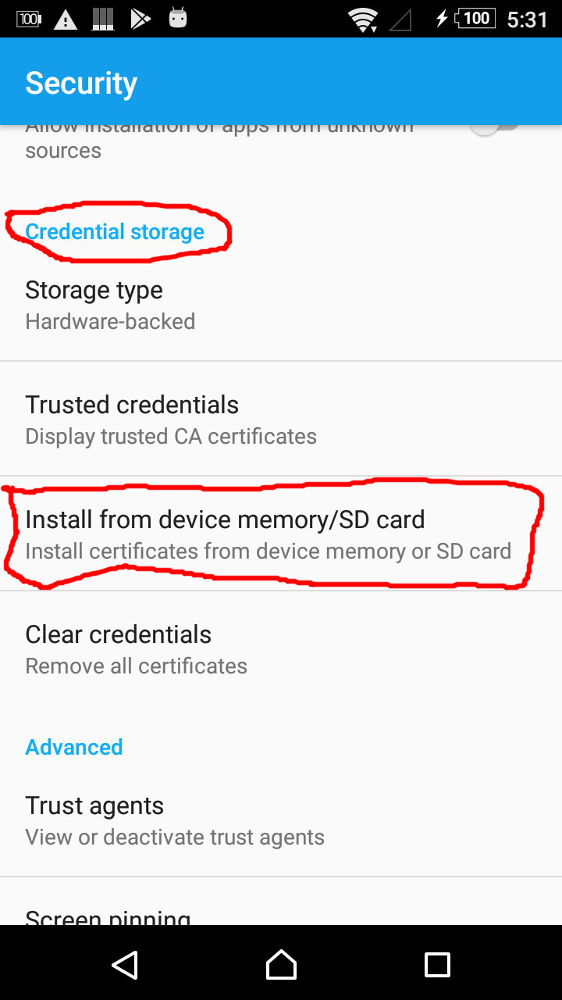ファイルピッカーが開きます。 !!サイドメニューの「ダウンロード」を選ばないでください!! かわりに「内部ストレージ」を選びます。もし「内部ストレージ」の項目がない場合、右上の「…」ボタンを試してください。
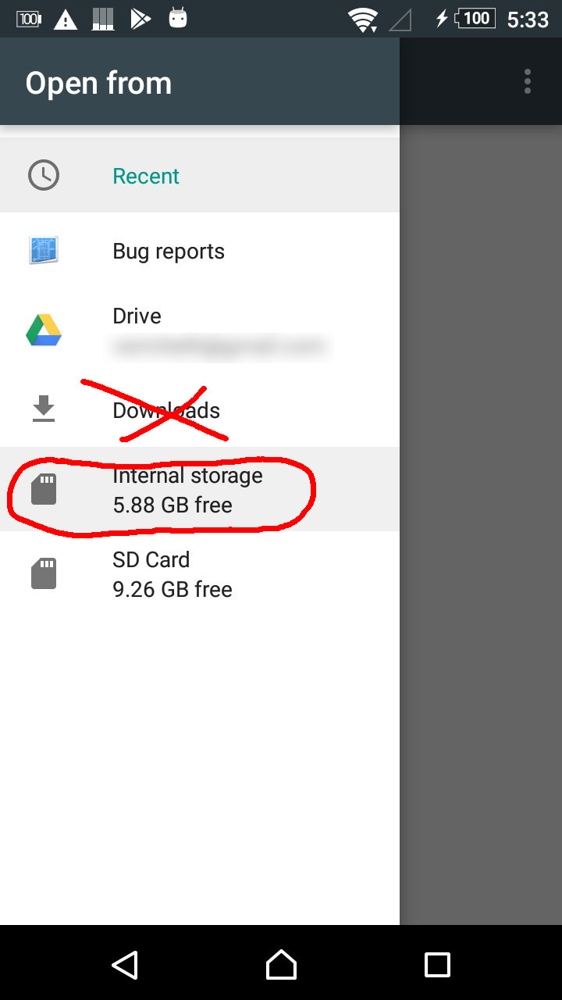内部ストレージの下にある "Download" フォルダを選び、その中の "isrgrootx1.pem" を選択します。
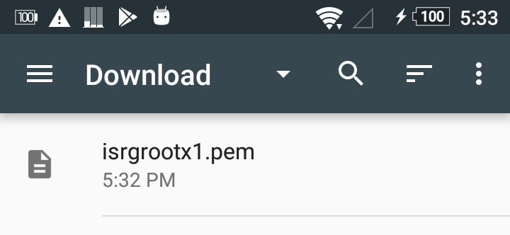証明書の名前を入力します。他の証明書と区別できるなら何でもOKです。
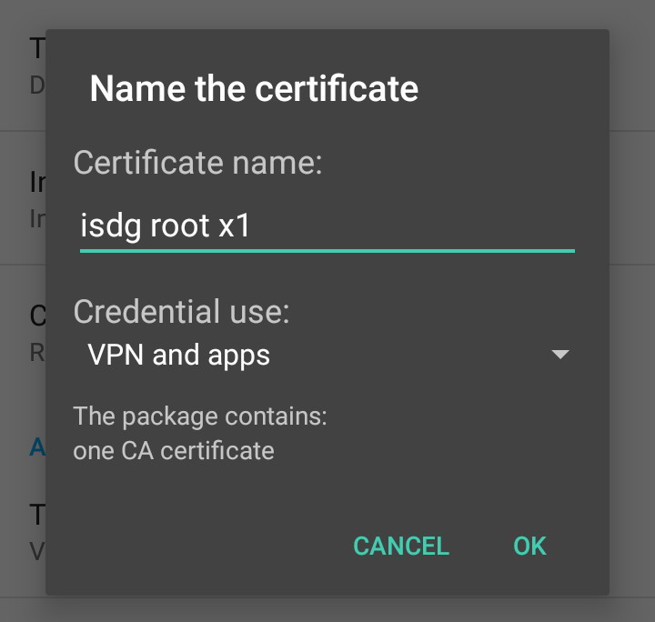戻るボタンを何度か押してこのアプリに戻ります。手順1のボタンを押します。
証明書が正しくインストールされていれば、試験サイトを閲覧できます。